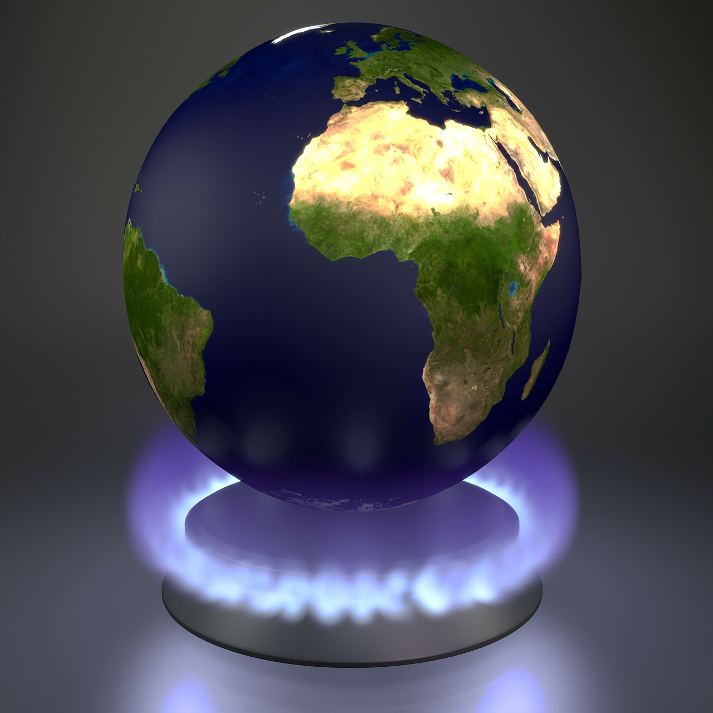
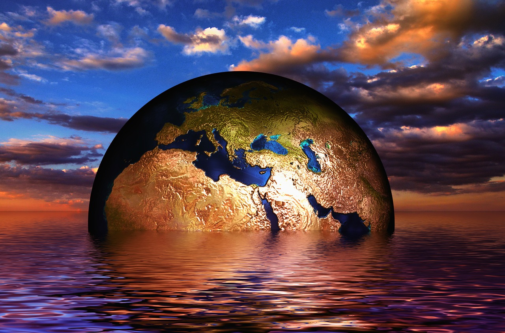

¿QUE ES EL EFECTO INVERNADERO?

El efecto invernadero es un fenómeno natural y beneficioso para nosotros. Determinados gases presentes en la atmósfera retienen parte de la radiación térmica emitida por la superficie terrestre tras ser calentada por el sol, manteniendo
la temperatura del planeta a un nivel adecuado para el desarrollo de la vida.
¿QUE ES EL CAMBIO CLIMATICO?

El cambio climático se refiere a los cambios a largo plazo de las temperaturas y los patrones climáticos. Estos cambios pueden ser naturales, por ejemplo, a través de las variaciones del ciclo solar. Pero desde el siglo XIX, las actividades
humanas han sido el principal motor del cambio climático, debido principalmente a la quema de combustibles fósiles como el carbón, el petróleo y el gas.